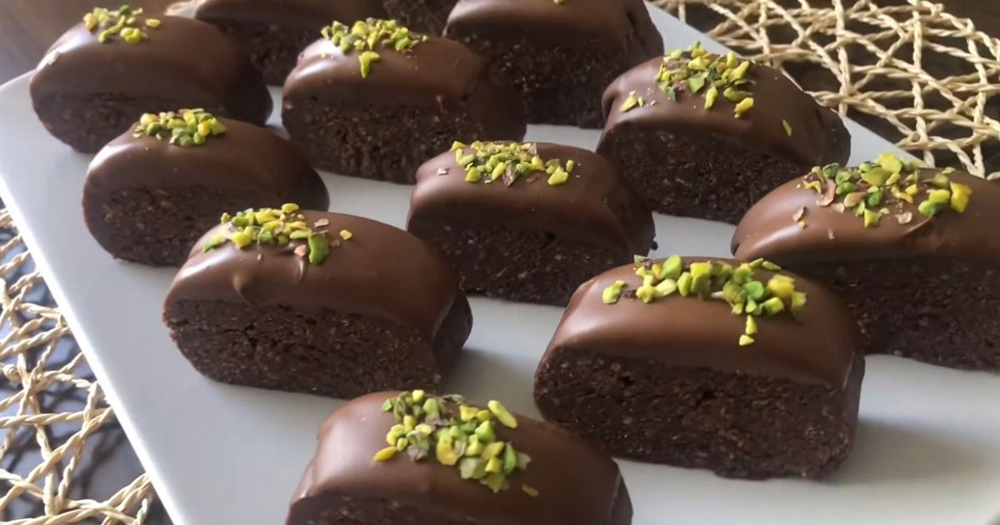

...Çikolata Küpleri...
çikolatalı ve şam fıstıklı tadımlık lezzetler...Yalnızca 4 malzeme ile hazırlanan çikolata küpleri, renkli kağıtlarda veya kürdan bastırılarak servis edilir. Özellikle kalabalık sofralarda yer verilen çikolatanın küpleri, doğum günü gibi özel etkinliklerde de sunulabilir.
Tarif:Rukiye Beyza Sarıkaya
Kişi Sayısı: 4 Kişilik
Hazırlama Süresi:30 Dakika
Pişirme Süresi: 20 Dakika

Çikolata Küpleri Tarifi İçin Malzemeler..
- 350 gr bitter çikolata
- 150 ml krema
- 1 çorba kaşığı tereyağı
- 150 gr şamfıstık (Badem veya Fındık Olabilir)
Çikolata Küpleri Nasıl Yapılır?
- Bitter çikolatayı benmari usulü eritin.
- Eriyen çikolatanın üzerine krema ve tereyağını ekleyip iyice karıştırıp tencereyi bir tezgaha alın.
- Şamfıstıkları havanda çok az dövüp irili ufaklı parçalara bölün.
- Ufalanan fıstıkları çikolatalı karışıma ekleyip karıştırın.
- Hazırladığınız çikolatayı varsa alüminyum hazır bir kare tepsiye, yoksa kenarlarından taşarak yağlı kağıt yerleştirdiğiniz küçük bir tepsiye dökün.
- Buzdolabında 2 saat bekletin.
- Çikolatayı kaptan çıkarttın. Kare parçalara bölün.